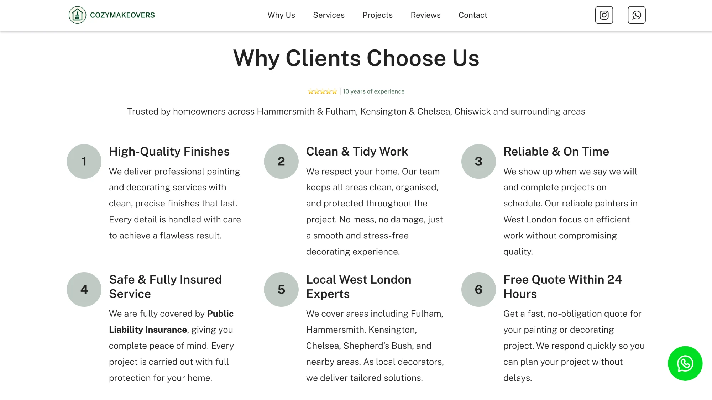
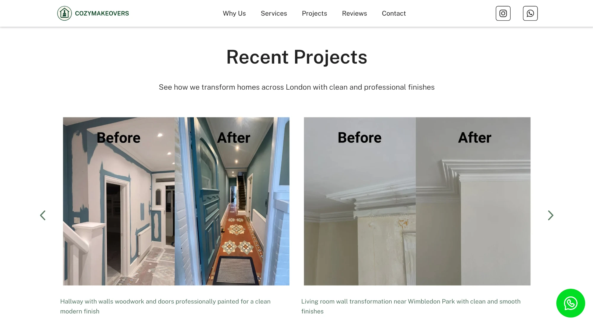
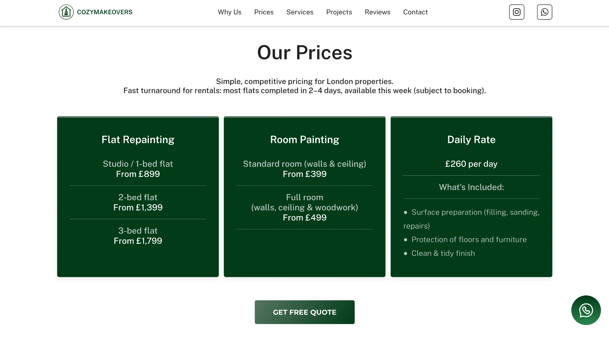
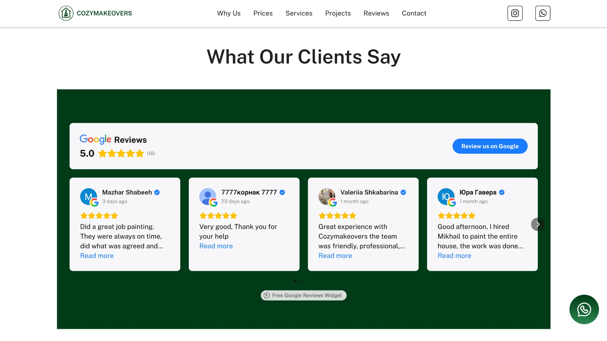

CozyMakeovers: brand, UX and website for a West London renovation business
End-to-end ownership from scratch: created the brand name, logo and visual identity, designed the UX and UI, then built and launched the live website.
The problem
The client ran a painting, decorating and renovation business in West London entirely through Instagram, sharing before/after photos and relying on word-of-mouth. The work was high quality, but there was no brand, no website, and no structured way to capture leads from people who weren't already followers.
Potential customers were landing on an Instagram profile expecting a business, finding no name, no clear services, no contact form, and no way to request a quote. Most left without getting in touch.
The brief covered everything from scratch: name the business, create the brand, design the website, build it, and launch it. All with a focus on lead generation without paid advertising.

Brand identity
Before designing a single screen, I needed to create the foundation the website would sit on. The client had no name, no logo, and no visual direction.
Naming and positioning
- Developed the name "CozyMakeovers" to feel warm, approachable and memorable
- Positioned around trust and craftsmanship rather than price
- Tone of voice: professional but personal, not corporate
Visual identity
- Designed a simple, memorable logo
- Built a soft, neutral colour palette to signal calm and quality
- Chose clean, readable typography to support accessibility

Discovery and research
With a tight timeline and no existing data, I focused research where the signal already existed: the client's Instagram audience and the competitive landscape.
Instagram comments and DMs audit
- Reviewed recurring questions from followers
- Identified most-asked topics: pricing, timelines, service areas
- These became the primary content priorities for the site
Competitor analysis
- Reviewed 5 to 6 renovation service websites in West London
- Common pattern: portfolio-first layouts, vague CTAs, weak trust signals
- Opportunity: most lacked clear service breakdowns and visible social proof
Key insight: visitors weren't just looking for beautiful work. They needed confidence that this business was credible, local, and easy to contact. Trust signals mattered as much as the portfolio itself.
User journey
How visitors move through the site
Mapping the full visitor path from entry to lead, including where drop-offs happen and why.
Instagram · Direct link · Word of mouth
97% of traffic is direct — visitors arrive through the client's existing network
Hero — Painting & Decorating Services
Full-width image, location-specific headline, dual CTA: Get Free Quote · Call Us
No brand recognition. Visitor leaves without scrolling.
Why Us · Services · Prices from £399
6 trust signals, 10 years experience, transparent pricing
Visitor self-selects out — saves client from unqualified leads.
Before/after gallery · 5.0 ★ Google reviews
16 verified reviews embedded on-site
Interested but undecided. May return — 97% direct traffic supports this.
Form · WhatsApp · Phone
Three routes reduce friction. Form pre-qualifies the lead.
WhatsApp acts as a lower-friction fallback.
✓ Lead captured
8 enquiries received · client responds within 24 hours
Design decisions
Working directly in high-fidelity, I prioritised speed to launch while making deliberate structural decisions informed by the research.
Services above the portfolio
Competitors led with visual work. The DM audit showed users asked about services first. I restructured the information architecture to answer "what do you do and where?" before showing the work.

One primary CTA repeated across sections
"Get a free quote" appeared in the hero, after the services section, and in the footer, reducing friction at every decision point rather than relying on a single contact page.
Before/after gallery as trust anchor
Instagram content was reused as a structured portfolio section, showing transformation rather than just finished work. This made the visual proof more persuasive than a standard photo grid.

Reviews and years of experience in the hero
Trust signals moved from the bottom of the page to the hero, addressing credibility doubts before the user had to scroll to find them.
Transparent pricing as a dedicated section
Most local trade businesses avoid publishing prices. I recommended the opposite: a clear pricing page (Flat Repainting from £899, Room Painting from £399, Daily Rate £260) to pre-qualify leads and reduce back-and-forth before first contact. Visitors who submit a form already know roughly what to expect, which makes those enquiries higher quality.


Build and launch
Designed and built end-to-end using a no-code website builder. Configured contact forms, set up SEO metadata, and launched without developer dependency. The client can update content independently after handoff.



Outcome
The site replaced Instagram DMs with a structured lead flow. 97% of traffic is direct. The client's existing network now arrives at a credible destination rather than a social profile. A ~4% form conversion rate is strong for a local trade service with zero paid ads. The site is still live and generating enquiries at cozymakeovers.com.
What I'd do differently
With more time, I'd have run usability tests before launch to validate the CTA placement and service page structure. I'd also have set up Google Analytics from day one rather than retrospectively. The 1,100 visitors figure tells us about reach, but not the quality of leads or which pages drove the most enquiries. That data would have shaped the first round of post-launch iterations.